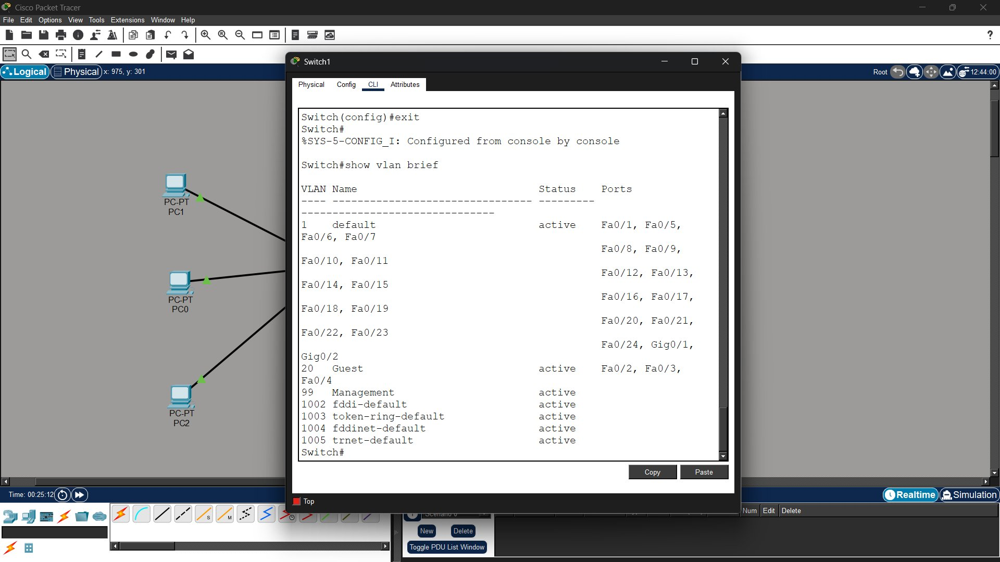
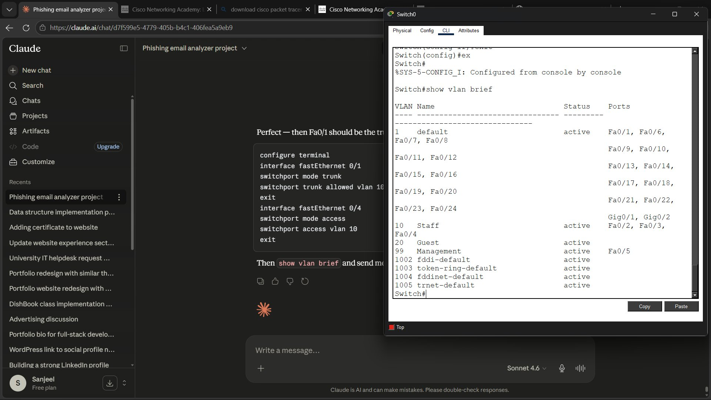
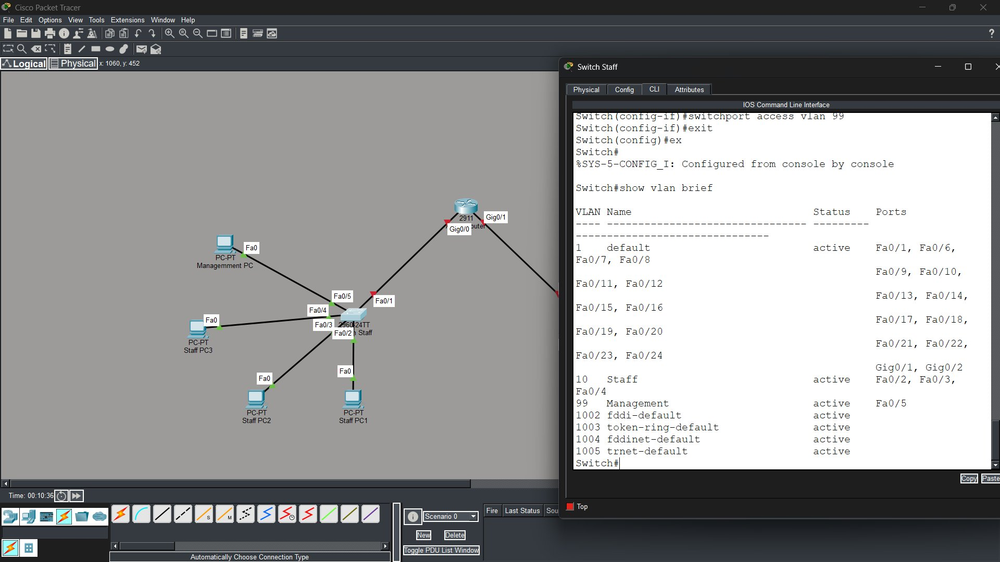
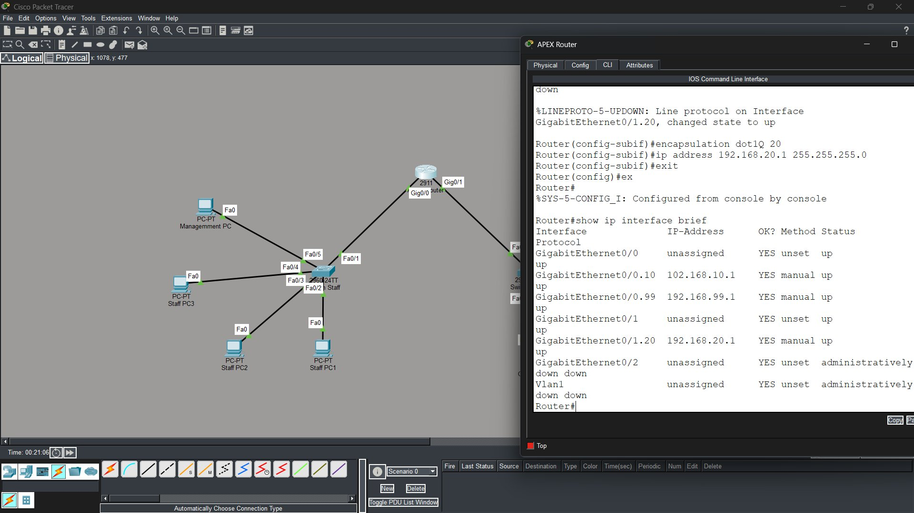
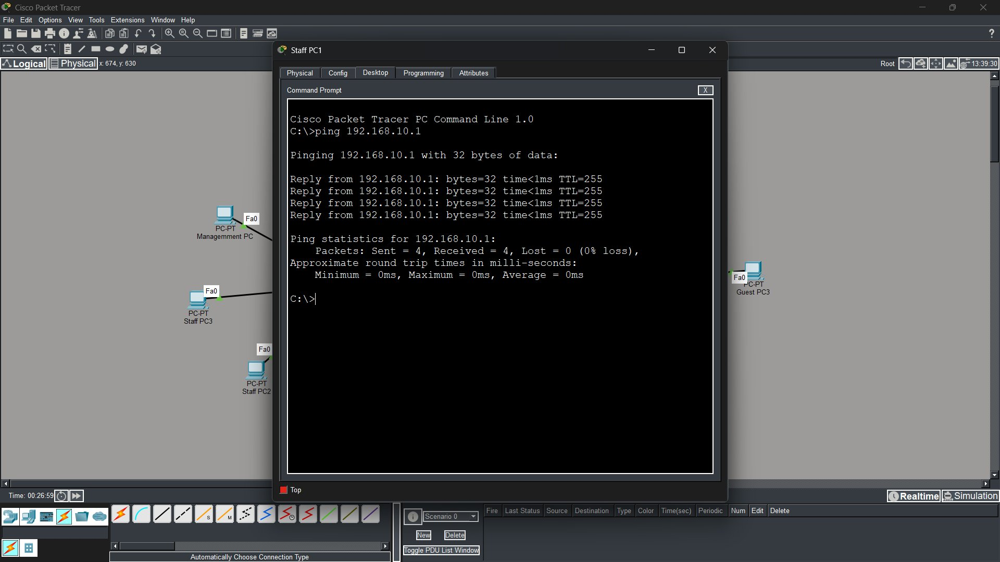
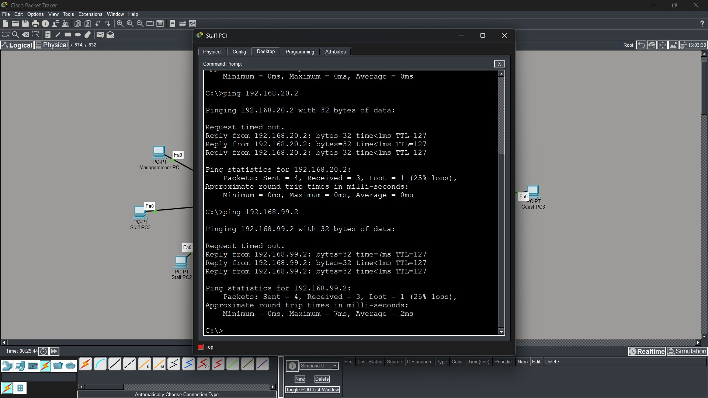

What is this project?
This project involves designing and configuring a segmented network infrastructure for a fictional Sydney-based company called Apex Solutions using Cisco Packet Tracer. The goal was to separate network access for three categories of users — Staff, Management, and Guests — using VLANs and inter-VLAN routing.
The network was built entirely from scratch: placing devices, cabling, configuring switches and a router via CLI, assigning IP addresses, and verifying connectivity through ping tests.
Network Layout
The network consists of one Cisco 2911 router, two Cisco 2960 switches, and seven end devices. The router connects to both switches via GigabitEthernet ports and handles inter-VLAN routing through subinterfaces.

VLAN Configuration
Three VLANs were created to segment the network. Each VLAN isolates its users from other groups — a Staff PC cannot directly communicate with a Guest PC without the router's permission.
| VLAN ID | Name | Switch | Ports Assigned |
|---|---|---|---|
| 10 | Staff | Switch-Staff | Fa0/2, Fa0/3, Fa0/4 |
| 99 | Management | Switch-Staff | Fa0/5 |
| 20 | Guest | Switch-Guest | Fa0/2, Fa0/3, Fa0/4 |
Trunk ports were configured on Fa0/1 of each switch to carry all VLAN traffic to the router simultaneously.
| Switch | Trunk Port | Connected To | VLANs Allowed |
|---|---|---|---|
| Switch-Staff | Fa0/1 | Apex-Router Gig0/0 | 10, 99 |
| Switch-Guest | Fa0/1 | Apex-Router Gig0/1 | 20 |


IP Address Table
Each VLAN was assigned a /24 subnet. The router subinterface for each VLAN serves as the default gateway for devices in that segment.
| Device | VLAN | IP Address | Subnet Mask | Gateway |
|---|---|---|---|---|
| Apex-Router Gig0/0.10 | 10 | 192.168.10.1 | 255.255.255.0 | — |
| Apex-Router Gig0/0.99 | 99 | 192.168.99.1 | 255.255.255.0 | — |
| Apex-Router Gig0/1.20 | 20 | 192.168.20.1 | 255.255.255.0 | — |
| Staff-PC1 | 10 | 192.168.10.2 | 255.255.255.0 | 192.168.10.1 |
| Staff-PC2 | 10 | 192.168.10.3 | 255.255.255.0 | 192.168.10.1 |
| Staff-PC3 | 10 | 192.168.10.4 | 255.255.255.0 | 192.168.10.1 |
| Management-PC | 99 | 192.168.99.2 | 255.255.255.0 | 192.168.99.1 |
| Guest-PC1 | 20 | 192.168.20.2 | 255.255.255.0 | 192.168.20.1 |
| Guest-PC2 | 20 | 192.168.20.3 | 255.255.255.0 | 192.168.20.1 |
| Guest-PC3 | 20 | 192.168.20.4 | 255.255.255.0 | 192.168.20.1 |

Connectivity Testing
All inter-VLAN routing was verified using ICMP ping tests. The 25% packet loss on some tests is expected — caused by ARP resolution on the first packet, which is normal behaviour in Cisco Packet Tracer.


What I Learned
A network infrastructure with two switches, one router, three Staff PCs, three Guest PCs and one Management PC was successfully built and configured in Cisco Packet Tracer. VLANs ensured the prevention of unauthorized access between different categories of users, with each group isolated to its own network segment.
In the future, a firewall can be added to further control traffic between VLANs, and internet connectivity can be provided to all users through the router.